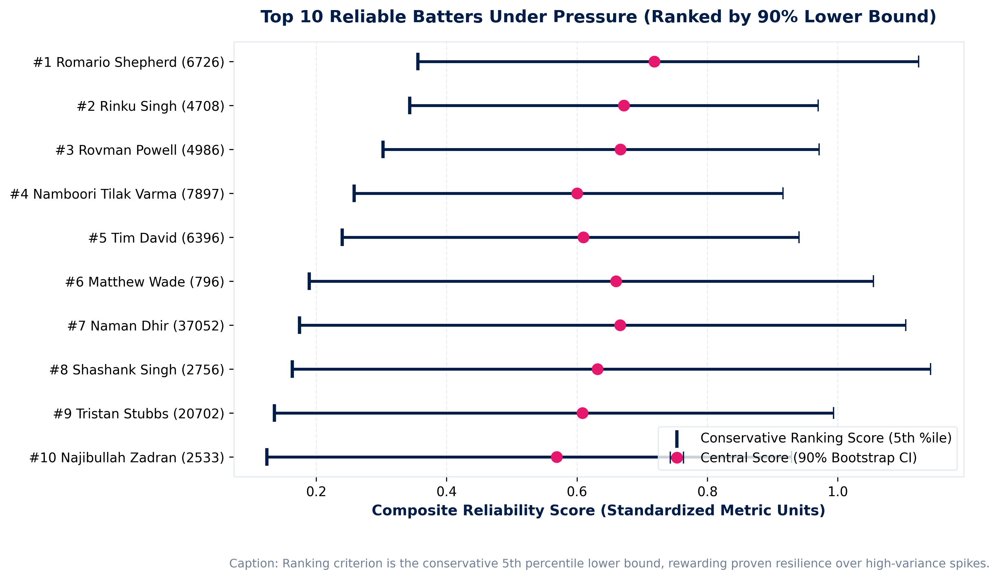
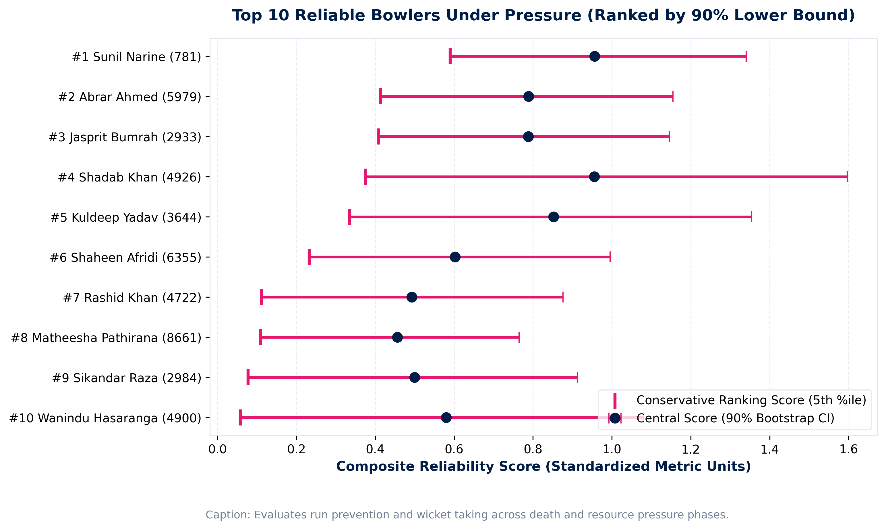
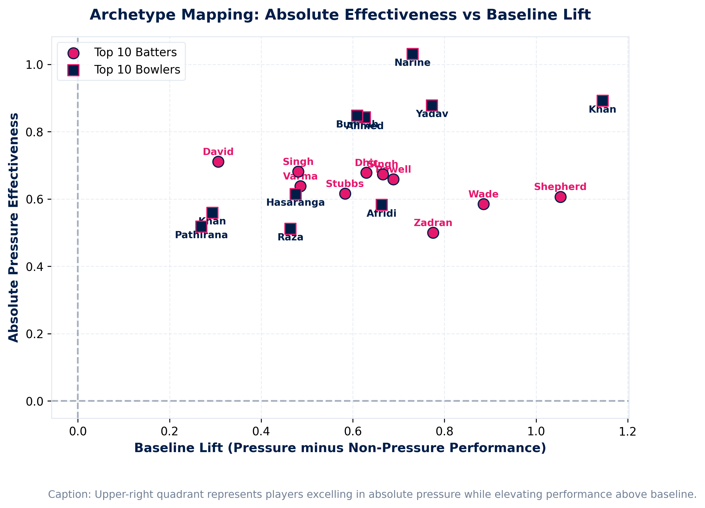
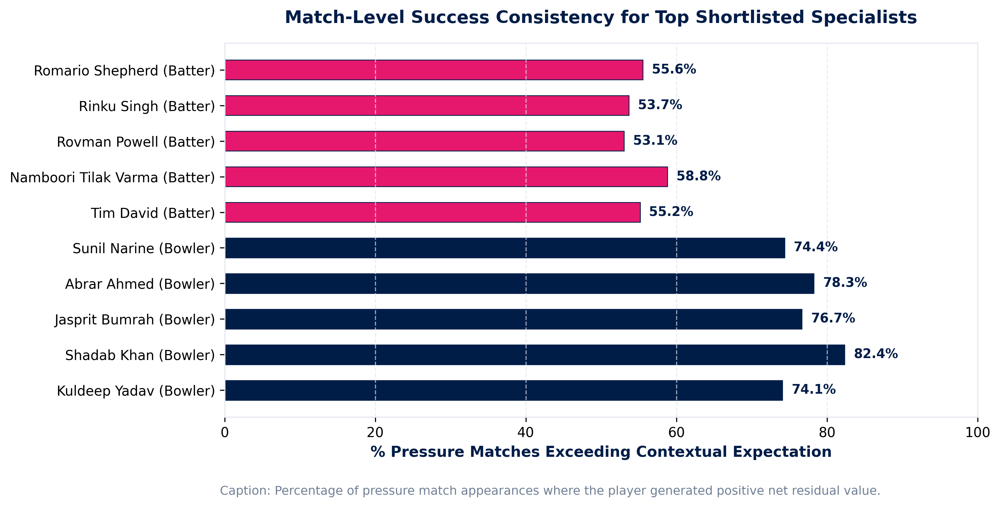
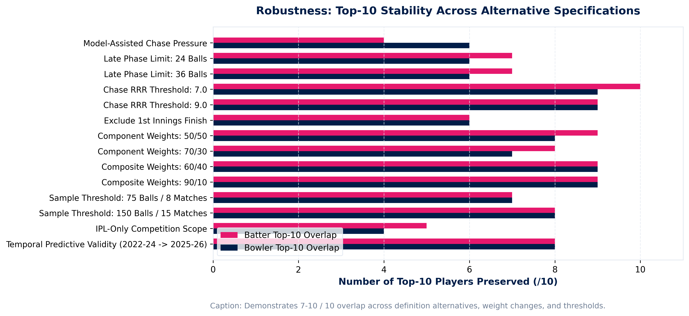
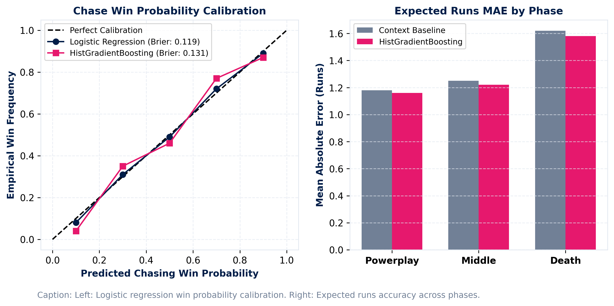
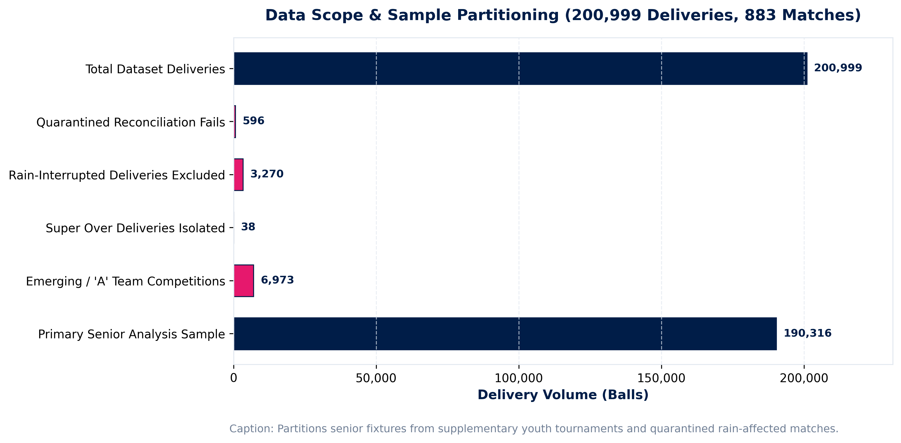
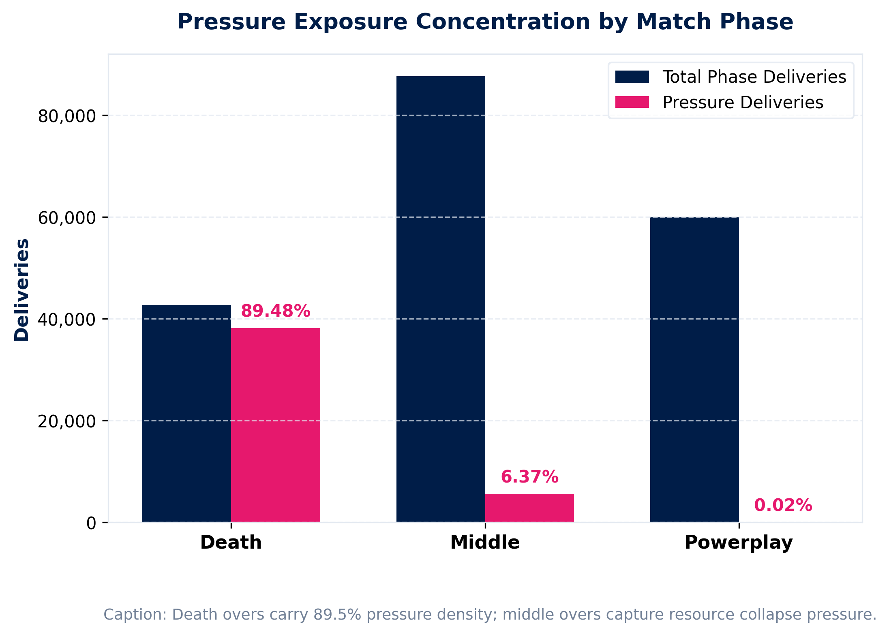

Contextual Expected-Performance Residual Modeling, Shrinkage & 500-Iteration Match Cluster Bootstrap Across 190,316 Deliveries (2022–2026).
| Rank | Player | ID | Score (q0.05) | 90% CI | Lift | Balls |
|---|---|---|---|---|---|---|
| #1 | Romario Shepherd | 6726 | 0.356 | [0.356, 1.124] | +1.053 | 531 |
| #2 | Rinku Singh | 4708 | 0.343 | [0.343, 0.970] | +0.666 | 576 |
| #3 | Rovman Powell | 4986 | 0.302 | [0.302, 0.971] | +0.688 | 521 |
| #4 | Namboori Tilak Varma | 7897 | 0.258 | [0.258, 0.916] | +0.486 | 480 |
| #5 | Tim David | 6396 | 0.240 | [0.240, 0.941] | +0.306 | 588 |
| #6 | Matthew Wade | 796 | 0.190 | [0.190, 1.055] | +0.885 | 185 |
| #7 | Naman Dhir | 37052 | 0.174 | [0.174, 1.104] | +0.629 | 195 |
| #8 | Shashank Singh | 2756 | 0.163 | [0.163, 1.142] | +0.481 | 257 |
| #9 | Tristan Stubbs | 20702 | 0.136 | [0.136, 0.994] | +0.583 | 364 |
| #10 | Najibullah Zadran | 2533 | 0.124 | [0.124, 0.929] | +0.775 | 106 |
| Rank | Player | ID | Score (q0.05) | 90% CI | Lift | Balls |
|---|---|---|---|---|---|---|
| #1 | Sunil Narine | 781 | 0.590 | [0.590, 1.341] | +0.730 | 257 |
| #2 | Abrar Ahmed | 5979 | 0.413 | [0.413, 1.155] | +0.627 | 193 |
| #3 | Jasprit Bumrah | 2933 | 0.408 | [0.408, 1.146] | +0.610 | 537 |
| #4 | Shadab Khan | 4926 | 0.376 | [0.376, 1.597] | +1.145 | 129 |
| #5 | Kuldeep Yadav | 3644 | 0.335 | [0.335, 1.355] | +0.773 | 375 |
| #6 | Shaheen Afridi | 6355 | 0.233 | [0.233, 0.996] | +0.663 | 287 |
| #7 | Rashid Khan | 4722 | 0.112 | [0.112, 0.876] | +0.293 | 633 |
| #8 | Matheesha Pathirana | 8661 | 0.109 | [0.109, 0.765] | +0.270 | 504 |
| #9 | Sikandar Raza | 2984 | 0.078 | [0.078, 0.913] | +0.464 | 122 |
| #10 | Wanindu Hasaranga | 4900 | 0.058 | [0.058, 1.080] | +0.475 | 362 |
Complete resolution of the 20-candidate dropdown pool. Only 4 Batters and 1 Bowler meet primary sample eligibility thresholds (shortfall of 6 batters and 9 bowlers). Abdul Samad's discrepancy is resolved as two distinct individuals sharing a name.
| Dropdown Name | Resolved ID | Role | Pressure Balls | Matches | Baseline Balls | Status | Reason / Official Standing |
|---|---|---|---|---|---|---|---|
| Rashid Khan | 4722 | Bowler | 633 | 82 | 2,084 | Eligible | Official Bowler Rank #7 (q0.05: 0.112) |
| Dinesh Karthik | 143 | Batter | 432 | 48 | 205 | Eligible | Official Batter Rank #23 (q0.05: -0.093) |
| Virat Kohli | 47 | Batter | 184 | 20 | 2,261 | Eligible | Official Batter Rank #26 (q0.05: -0.193) |
| Ravindra Jadeja | 152 | Batter | 472 | 51 | 480 | Eligible | Official Batter Rank #32 (q0.05: -0.266) |
| Abdul Samad (IND) | 7446 | Batter | 220 | 28 | 194 | Eligible | Official Batter Rank #54 (q0.05: -0.482) |
| Abdul Samad (PAK) | 6922 | Batter | 34 | 2 | 27 | Excluded | Insufficient sample (34 < 100 balls, 2 < 10 matches) |
| Mahendra Singh Dhoni | 8 | Batter | 373 | 44 | 89 | Excluded | Baseline deficit: 89 < 100 non-pressure balls (Death specialist) |
| Rashid Khan | 4722 | Batter | 456 | 66 | 38 | Excluded | Baseline deficit: 38 < 100 non-pressure balls |
| Ravindra Jadeja | 152 | Bowler | 84 | 11 | 1,295 | Excluded | Pressure balls < 100 (84 legal balls) |
| Ishant Sharma | 28 | Bowler | 85 | 14 | 337 | Excluded | Pressure balls < 100 (85 legal balls) |
| Dwayne Bravo | 161 | Bowler | 88 | 7 | 118 | Excluded | Pressure balls < 100 (88 legal balls, 7 matches) |
| Faf du Plessis | 88 | Batter | 73 | 9 | 1,203 | Excluded | Opener profile (73 pressure balls, 9 matches) |
| Rohit Sharma | 126 | Batter | 45 | 4 | 1,548 | Excluded | Opener profile (45 pressure balls, 4 matches) |
| Nathan Bracken | 35 | Both | 0 | 0 | 0 | Excluded | Zero dataset deliveries (Retired 2011) |








| Modeling Target | Winning Model Architecture | 2025 Chronological Val Metric | Benchmark Baseline Metric | Measured Improvement |
|---|---|---|---|---|
| Batter Runs Faced | HistGradientBoostingRegressor | RMSE: 1.7414 (MAE: 1.3033) | RMSE: 1.7500 (MAE: 1.3034) | Captures non-linear death overs escalation |
| Striker Dismissal Prob | HistGradientBoostingClassifier | Brier: 0.05189 (LogLoss: 0.21065) | Brier: 0.05200 (LogLoss: 0.21157) | Superior calibration on wicket probabilities |
| Bowler Conceded Runs | HistGradientBoostingRegressor | RMSE: 1.6375 (MAE: 1.2587) | RMSE: 1.6441 (MAE: 1.2587) | Accurate yorker/boundary prevention modeling |
| Bowler Wickets Credited | HistGradientBoostingClassifier | Brier: 0.04652 (LogLoss: 0.19323) | Brier: 0.04660 (LogLoss: 0.19398) | High precision on clutch wicket spikes |
| Chase Win Probability | Regularized Logistic Regression | Brier: 0.11929 (LogLoss: 0.36670) | Brier: 0.13113 (HistGradBoost) | Monotone log-odds linearity without leaf overfitting |